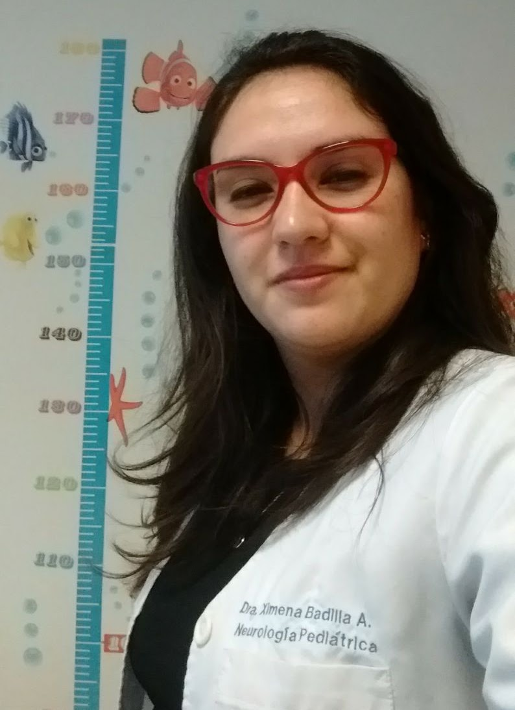
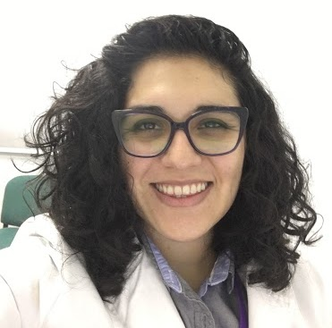

Dos especialistas con formación nacional e internacional, trabajando de forma coordinada para ofrecer una atención neuropsiquiátrica integrada.

Médico Cirujano de la Universidad de la Frontera. Neuróloga Pediátrica de la Universidad de Chile, sede Oriente, formada en el Hospital Dr. Luis Calvo Mackenna. Diplomada en electroencefalografía pediátrica por la Clínica Integral de Epilepsia y Neurodesarrollo.
Ha presentado trabajos de investigación en múltiples congresos, destacando los Congresos Anuales de SOPNIA y las Jornadas Invernales de Epilepsia. Cuenta con formación en Docencia Efectiva otorgada por la Universidad de Chile.
Actualmente se desempeña en el Hospital de Lautaro y en el Hospital Hernán Henríquez Aravena, además de su práctica privada en NeuroPsynfonía. Es docente de la Universidad Mayor y de la Universidad de la Frontera.
Junto a la Dra. Cortés conformó la Unidad de Neuropsiquiatría Infantil del Hospital Intercultural de Nueva Imperial, pionera a nivel nacional en atenciones neuropsiquiátricas conjuntas en el sector público.
Registro Superintendencia de Salud N° 392719 · Colmed 37504-7 · Verificar en el RNPI →
Agendar hora directamente →
Médico Cirujano de la Universidad de Concepción, especialista en Psiquiatría del Niño y del Adolescente de la Pontificia Universidad Católica de Chile. Diplomada en Salud Mental Perinatal de la Universidad de Chile y en Terapia Familiar del Niño por el Instituto Chileno de Terapia Familiar, institución donde actualmente cursa el Postítulo de Terapia Familiar y de Pareja.
Realizó pasantías internacionales en el Centre Hospitalier de Béziers (Francia) y en el Service de Psychiatrie de L'Enfant et de L'Adolescent del Hôpital Pitié-Salpêtrière, París.
Ha participado como expositora en Congresos de Médicos EDF, jornadas de educación médica (LACRE), Jornadas de APS y en instituciones como Bomberos de Chile.
En el sector público se desempeñó en dispositivos de atención primaria, secundaria y terciaria en las regiones del Bío-Bío, Ñuble, Metropolitana y Araucanía. Junto a la Dra. Badilla conformó la Unidad de Neuropsiquiatría Infantil del Hospital Intercultural de Nueva Imperial, pionera a nivel nacional en atenciones neuropsiquiátricas conjuntas en el sector público.
Es también Facilitadora de Biodanza de la Escuela de Biodanza Del Mar, y coordinó un taller de Biodanza para adolescentes en la Corta Estadía del Hospital Sótero del Río.
Registro Superintendencia de Salud N° 187230 · Colmed 30422-0 · Verificar en el RNPI →
Inscribirse (~10 días de espera presencial) →Cuando el caso lo requiere, coordinamos con una red de profesionales de confianza